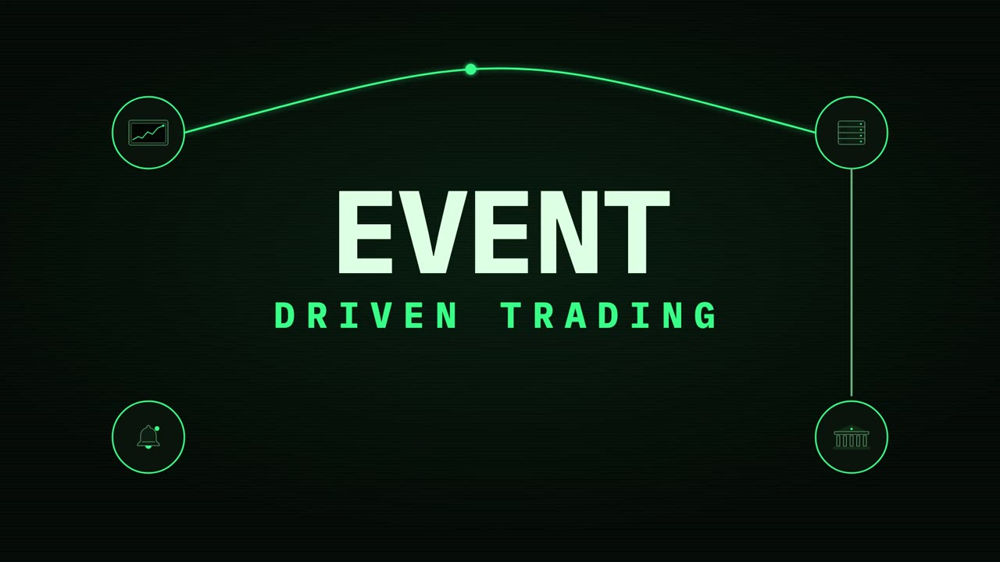
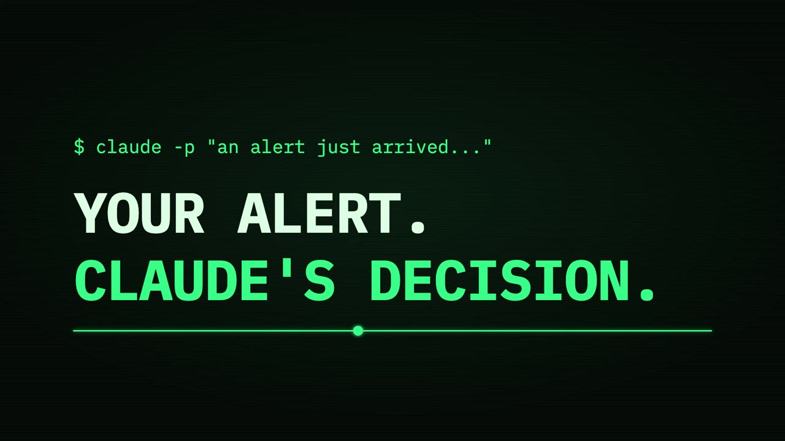
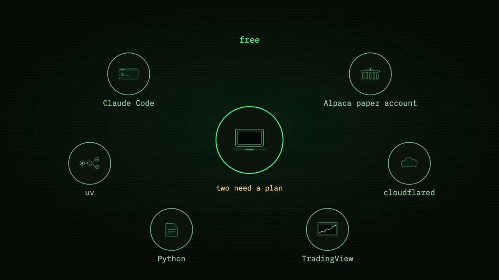
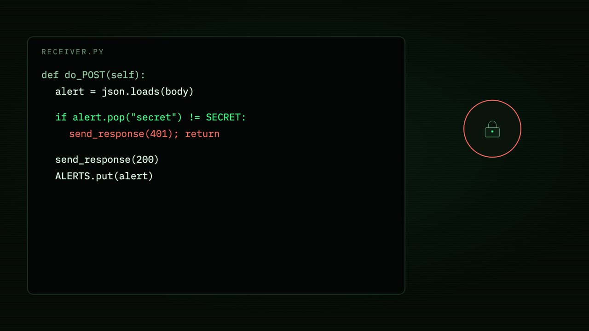
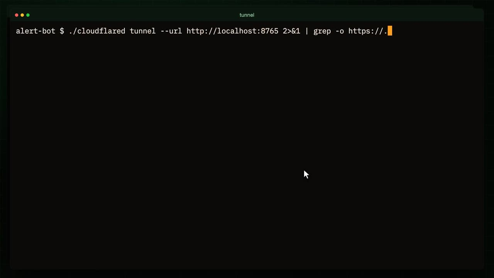
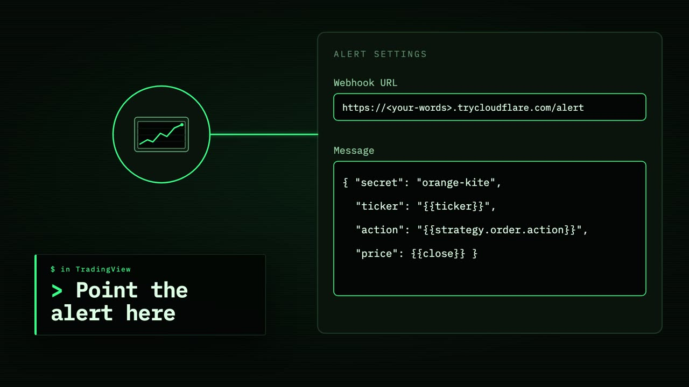
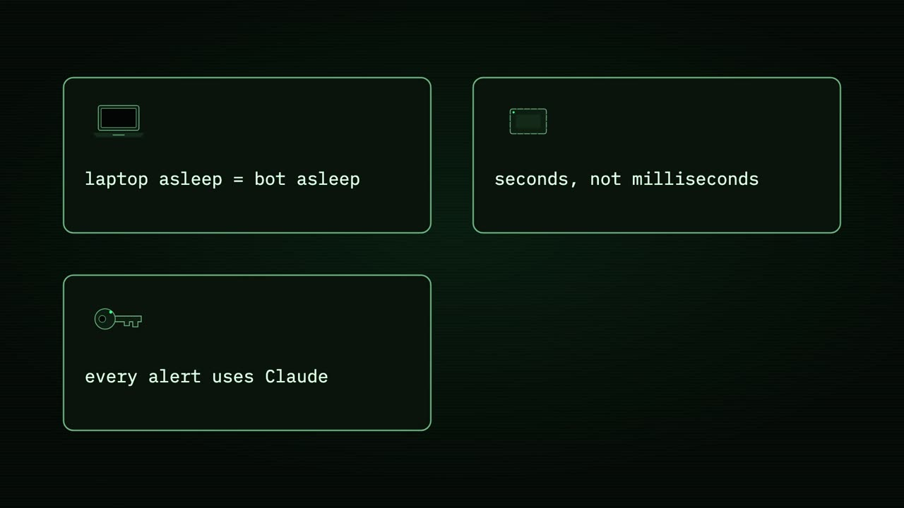

Lessons / AI trading, step by step
My AI trades while I'm away: a TradingView alert wakes Claude, and it places the order (Alpaca)
A TradingView alert wakes Claude Code on your own machine. Through the Alpaca MCP server, Claude checks the price and the account, follows your rules, and places a paper trade or says why it skipped. Every piece shown from nothing: the receiver, a free Cloudflare tunnel, headless Claude and the tool list that locks it down.
Prices and numbers are as of the video's publication, September 28, 2026.
The code for this lesson: github.com/nexusfissioncode/algo-trading/tree/main/alert-to-claude
What an alert sends Watch from 0:00

Every automated trade you have ever heard of starts the same way. Something happens on a chart, and a moment later a program somewhere else knows about it and acts.
That something is called an event, and this chapter follows one from the moment it is born to the moment it is caught, live on screen, so you can see exactly what travels between the pieces.
Here is the chart where it starts. You set an alert on it, a rule like price crossing a line, and the chart watches for you so you do not have to.
Pull back and there is the whole picture. The alert is the producer: it makes the event. It does not know who is listening, and it does not care.
The event travels down a channel, here a webhook, which is just an address another program can knock on. On the other side, anything that listens is a consumer, and there can be as many of them as you like.
So what is an event, really? When the alert fires, it writes a few lines of text: which market, what to do, and the price at that moment. This format is called Jason, and it is just labels and values that any program can read.
Then it sends those lines down the webhook, and that is the whole event. No magic, no connection to your broker, just a small message delivered to an address.
Let me show you on a real chart. I open a browser, go to TradingView, and pull up bitcoin against the dollar. No account needed to look at a chart, and this is live, not a screenshot.
Up in the toolbar is the Alert button. That is where you would set the rule and paste the address of your webhook, so the chart knows where to send its event.
Here is the other end: a receiver, a dozen lines of Python, listening on an address on my own machine. It is waiting, doing nothing, until something knocks.
In a second terminal I send it exactly the message an alert would send, with a command called curl. Same address, same lines of text.
And there it is, caught. The receiver prints what it got: bitcoin, and the action is buy.
Then the one line that matters: what your code decides to do with it. Here it only says what it would place, because nothing trades yet. That comes next.
Back to the picture. Your receiver is the consumer we just watched catch the event, and from here it can do anything it likes with it.
It can pass it on to the broker as an order, write it to a log, and buzz your phone, all from the same event, all at once.
That is what event driven means: one thing happens, and every listener hears about it. The alert never needed to know any of them existed.
The plan Watch from 2:33

So far the receiver only printed what it would do. In this video it does something much more interesting. When the alert arrives, it wakes up Claude, the AI, on your own machine, with nobody at the keyboard.
Claude looks at your paper account and the live price, checks your rules, and then either places the trade or tells you exactly why it did not. Every piece of it, built from nothing and run live.
Here is the whole thing, one piece at a time. It starts where the last part ended: an alert on a chart, sent as a small message to an address.
That address has to be on the public internet, and your laptop is not. So a tunnel gives your laptop a public address, and passes every message through to the receiver running inside your own machine.
The receiver checks the message is really yours, and then starts Claude Code, headless. Headless means no chat window and nobody typing: one question in, one answer out.
Claude reaches your broker through the Alpaca M C P server, the same one from the last video, and places the order in a paper account. Paper means pretend money, so nothing you learn here can cost you anything.
Why put Claude in the middle at all? A plain script does exactly what the alert says. If the alert says buy, it buys. If the alert fires twice by mistake, it buys twice.
Claude reads the situation first. Am I already holding this? Is the price in the alert still the price now? Does this trade fit the rules I was given? Then it decides, and it writes down why, in plain English, every time.
The tunnel is the one piece people usually get stuck on, so let us look closer. Cloudflare, the company that runs a big slice of the internet, gives away a free quick tunnel. You start one program, and it hands you a random public web address like this one.
Anything sent to that address travels down the tunnel to your laptop. Your laptop never opens a door to the internet: the tunnel program reaches out, and the messages come back along it.
At the far end it knocks on the receiver, which only listens on your own machine, on one port. Nothing else on your laptop is reachable.
What you need Watch from 4:30

Here is everything you need. Claude Code, which is Claude running in a terminal. An Alpaca paper account. A small tool called uv, which runs the Alpaca M C P server. Cloudflare's tunnel program, called cloudflared. Python, which every Mac already has. And TradingView, for the alert.
The Alpaca paper account, uv, cloudflared and Python are all free.
Two of them need a plan. Claude Code needs a Claude subscription or A P I credits, and every alert uses a little of it. And TradingView only sends alerts to a web address on a paid plan. If you are not ready to pay for that, you can still build and test everything else, exactly the way I do in this video.
Let me check all of that on a real machine. I open a terminal in an empty folder for the bot, and first ask Claude Code which version it is.
There it is: Claude Code is installed, and answering.
Next, uv. It answers with its version too, so the Alpaca server will be able to start.
Now the tunnel program. You could use Homebrew, but Cloudflare also publishes it ready to run, so I download it straight from their releases page with curl, and unpack it. On an Apple silicon Mac, the file name ends in arm 64 instead.
I ask it for its version, and cloudflared is ready. No account, no sign up.
If your terminal did not answer like that, here is how to get each piece. This one line installs Claude Code. Paste it, press enter, then type claude once and sign in with your Claude account in the browser. The last video walks through that sign in step by step.
uv comes from this second line. It is a tool that downloads a Python program and runs it in one go, which is exactly how the Alpaca server gets started, so there is nothing else to install for it.
And M C P, the model context protocol, is simply a plug. A program on one side offers tools, like get my positions or place an order, and Claude on the other side can call them. The Alpaca M C P server is that program for your broker.
The whole bot is four files, and three of them are mine. The M C P settings, the receiver, and the rules. Let us open the M C P settings first.
It says how to start the Alpaca server: with uvx, the run it once part of uv, and the name of the server.
And here is the important part. The keys are not in the file. The file only names two environment variables, and Claude fills them in from the terminal when it starts. So this file is safe to share, and your keys never sit on disk next to your code.
One more line says paper trading, true. This bot can only ever touch pretend money.
Now the rules, in plain English, because Claude reads English. The first one: only ever trade bitcoin against the dollar.
If the price in the alert is more than 3% away from the live price, the alert is stale, so skip it.
If the account already holds bitcoin, do not buy more. Never double up.
Otherwise, buy $1,000 worth, with a market order, which means buy now at whatever the price is.
And finish with one line that starts with decision: bought, sold or skipped, and why. That single line is what you will read later, to see what your bot did while you were away.
The receiver, line by line Watch from 7:31

Now the receiver, the one file that joins it all together. It is plain Python with nothing to install. When a message arrives, it reads the Jason out of it.
First it checks a secret. Your tunnel address is public, so anyone who found it could send you an alert. The secret is a word you choose, kept in an environment variable and put inside your TradingView message. No secret, no Claude: the message is thrown away before anything costs you a penny.
Then it answers straight away with an okay, and drops the alert into a queue. That matters, because TradingView only waits a few seconds for an answer, and Claude takes longer than that to think.
A worker takes alerts off the queue one at a time, in order, and hands each to Claude. One at a time, so two alerts arriving together can never both buy before either has checked the account.
This is the heart of it: how the receiver starts Claude. Dash p means print mode. Claude gets one prompt, here the alert itself, does the work, prints the answer and exits. No chat, no one watching.
These two lines load the Alpaca server from the settings file we just saw, and strict means only that server. Whatever else you have connected to Claude on this machine is left out.
These three are the safety catch. No built in tools at all, so no shell and no files. Then a short list of allowed tools: read the account, the positions and the price, place a crypto order, and close a position. And don't ask mode: anything not on that list is simply refused, because there is nobody here to say yes.
The rules file is added to Claude's instructions, so it follows them on every alert.
And stream Jason means Claude reports each step as it takes it, so the receiver can print every tool call and every answer the moment it happens. That is the log you will watch in a minute.
There are two kinds of safety here, and they are not the same. The rules are advice. Claude is very good at following them, but they are words, and words can be misread.
The tool list is a lock. It is enforced by Claude Code itself, not by Claude's judgement. If place an order for shares is not on the list, it cannot happen, however the alert is worded.
So put the hard limits in the list, the preferences in the rules, and keep the account on paper until you have watched it make 100 decisions you agree with.
The alert wakes Claude Watch from 9:35

Time to run it for real. In the first terminal I set the secret, orange kite, as an environment variable, and start the receiver. The Alpaca keys are already in this terminal's environment, set before I started recording.
It is listening, on my own machine only.
In a second terminal I start the tunnel, pointed at the receiver's port. Cloudflared prints a lot, so I keep only the line with the address.
And there is my public address, made up of four random words. It can take up to a minute before the rest of the internet can find a brand new address, so I wait, and I've sped up the waiting.
In a third terminal I send exactly what TradingView would send, to the public address, not to localhost. The secret, bitcoin, buy, and the price right now.
It went out across the internet, back down the tunnel, and the receiver has it. Claude is starting.
Watch the log. Claude asked Alpaca for the latest bitcoin trade, then for the positions, and found none. So it places a market order: bitcoin against the dollar, buy, $1,000' worth.
And its decision, in one line: bought, a fresh buy alert and no position held. A little over ten seconds from alert to order.
Here is the same order at the broker, on the Alpaca dashboard for the paper account. The newest order is bitcoin, a market buy, already filled. Nothing about it is simulated on my side: Alpaca really received it and filled it at the live price.
Now the mistake a plain script would make. I send the very same alert again, as if TradingView had fired twice. Claude checks the price, checks the positions, and this time finds the bitcoin it just bought.
So it skips, and says why: already holding, never double up. No order was sent at all.
Last, someone who found the address and guesses at the secret.
Rejected at the door. Claude was never woken, so it did not cost a thing, and nothing reached the account.
Point TradingView at it Watch from 11:23

To make a real TradingView alert do all of this, open the alert's settings and turn on the webhook. Paste your tunnel address, with slash alert on the end.
In the message box, write the same Jason I sent by hand, with TradingView's placeholders in the gaps. Double curly brackets ticker becomes the symbol, strategy order action becomes buy or sell, and close becomes the price when the alert fired. Your secret goes in as plain text.
One catch with quick tunnels: every time you start one, you get a new random address, so you would paste it into the alert again. A permanent address is exactly what the next video fixes.
Before you trust it Watch from 11:57

Before you trust this with anything, four things. First, it runs on your laptop. Close the lid, or let it sleep, and the tunnel and the receiver sleep with it, and any alert in the meantime is simply lost.
Second, Claude takes seconds to decide, around ten in this run. That is fine for swing trades and daily signals. It is not for scalping, where a few seconds is the whole trade.
Third, every alert that gets past the secret spends a little of your Claude usage, so a noisy alert that fires every minute will add up.
And fourth, stay on paper, for weeks. Read the decision log every day, and only when you agree with every line should you even think about real money.
That is the bot: an alert, a tunnel, a receiver, and Claude with a short list of tools and a page of rules, deciding on its own and writing down why.
In the next video we lift this whole box off your laptop and onto a free Google Cloud machine, with a permanent address, so it keeps catching alerts all night while your laptop is closed. See you there.